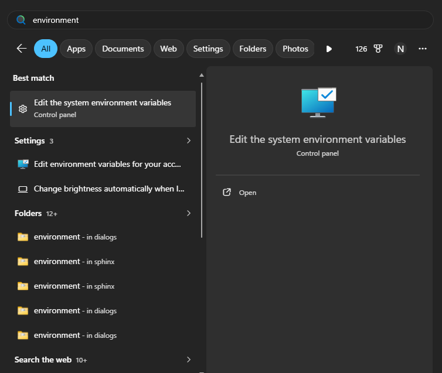
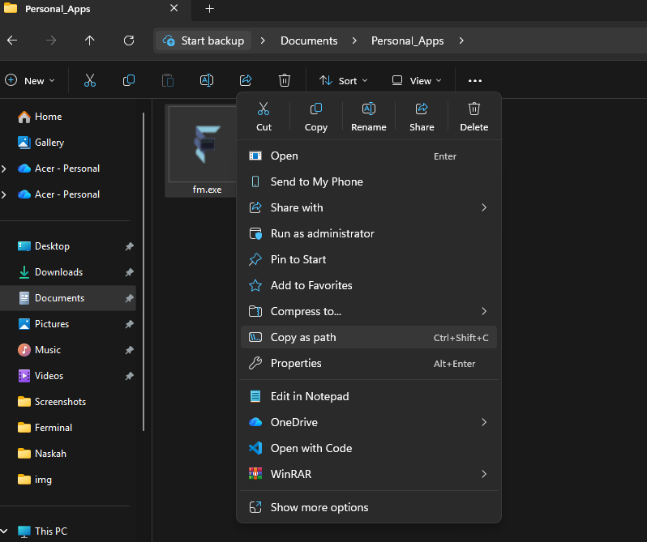
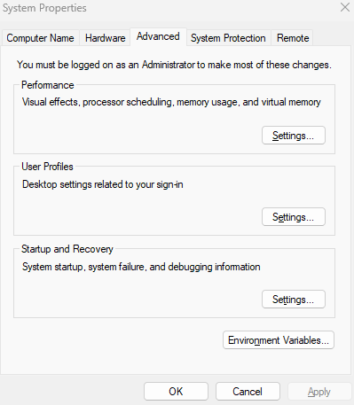
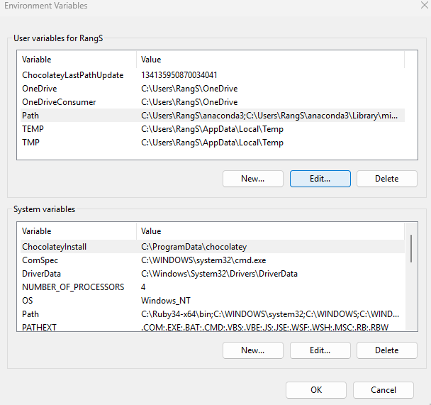
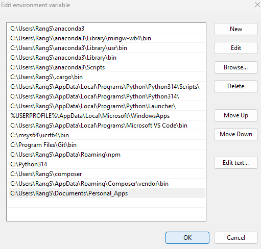

Latest News
Ferminal now updated to version 1.3. With the update to version 1.3, Ferminal has added a new feature that simplifies the Git Command with aliases. I'm also fix the change directory error that occurs when you use the "d" command, and the "h" command got fixed to the latest documentation.
Module/Library
Ferminal 1.3 needed some module/library to run, such as:
- OS module
- shlex module
- sys module
- time module
- colorama
Installation
There's 2 options to install Ferminal, you can either download the executable file or run the python script. If you want to run the python script, you need to have Python 3 installed on your system and also install the dependencies using pip.
Ferminal Executable
- Install the executable file from the official github release
- Double click the executable file to run it
- Then you can start using Ferminal!
Ferminal Python Script
- Install Python 3 from the official python website
- Open the command prompt and navigate to the directory where you downloaded the Ferminal python script
- Install the dependencies using pip by running the command: pip install -r requirements.txt
- Run the python script using the command: python ferminal.py
- Then you can start using Ferminal!
Post Installation (Recommended)
After installing Ferminal (Executable), it's recommended to add it to your system's PATH environment variable. This will allow you to run Ferminal from any location in the command prompt.
To add Ferminal to your PATH, follow these steps:
- Open the Start menu and search for "Environment Variables"
- Click on "Edit the system environment variables"
- In the System Properties window, click on the "Environment Variables" button
- In the Environment Variables window, under "System variables", scroll down and find the "Path" variable, then click on "Edit"
- In the Edit Environment Variable window, click on "New" and add the path to the directory where you installed Ferminal (e.g., C:\Ferminal)
- Click "OK" to close all windows

Post-Installation Image 1

Post-Installation Image 2

Post-Installation Image 3

Post-Installation Image 4

Post-Installation Image 5
Advantages after doing this post-installation step:
- You can run Ferminal from any location in the command prompt
- It's more convenient to use Ferminal without having to navigate to its installation directory
- You can also run Ferminal from the Run dialog (Win + R) by typing "fm" and pressing Enter.